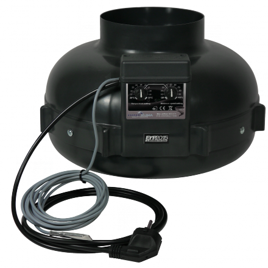
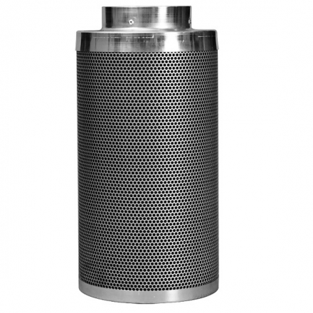
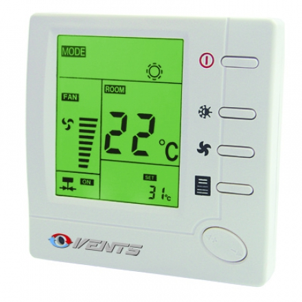

В закрытом пространстве вентиляция — это не просто «свежий воздух», а залог выживания растения. Без циркуляции воздуха повышается влажность, что моментально приводит к появлению плесени и гнили на шишках. Кроме того, угольный фильтр — единственный надежный способ сделать ваше хобби незаметным для окружающих.
Три столпа вентиляции
Вытяжка (Extractor)
Основной вентилятор, который вытягивает горячий и «пахучий» воздух из бокса наружу. Создает разрежение воздуха внутри.

Обдув (Fan)
Небольшие вентиляторы внутри бокса. Они укрепляют стебли растений (имитируя ветер) и предотвращают застой влажного воздуха.
Приток (Intake)
Отверстия или вентиляторы, через которые свежий воздух с кислородом попадает к корням и листьям.
Как работает угольный фильтр?
Угольный фильтр представляет собой цилиндр из активированного угля. Когда вытяжной вентилятор прогоняет воздух через этот фильтр, молекулы запаха «прилипают» к поверхности угля (процесс адсорбции). В результате из бокса выходит абсолютно чистый воздух.
Важно: Фильтр имеет ограниченный ресурс. В зависимости от интенсивности запаха и влажности, его нужно менять раз в 6-12 месяцев.
Расчет мощности вентиляции
Правило объема
В идеале воздух в боксе должен полностью обновляться каждые 1-3 минуты. Умножьте длину, ширину и высоту бокса, чтобы узнать объем, и подберите вентилятор с соответствующим CFM (куб. футы в минуту).

Борьба с жарой
Мощные лампы (особенно ДНаТ) сильно греют воздух. Качественная вытяжка — единственный способ удержать температуру в пределах 22-28°C.
Тишина в доме

Для снижения шума используйте гибкие гофрированные шланги и шумопоглощающие кожухи. Это сделает работу вентилятора почти бесшумной.
🌿 Нужен полный комплект?
Посмотрите наш общий раздел оборудования, чтобы подобрать вентилятор, фильтр и освещение в одном месте.
Перейти к оборудованию